Jogos da Era Windows
· Resolvi mostrar apenas os jogos da era Windows e shmups nesse site, a franquia começou na era PC-98, porém esta série de computadores estava em declínio na época, então os primeiros 5 jogos não são muito conhecidos entre os fãs.
• Tabela de Lançamento dos Jogos»- Touhou 06 - Embodiment of Scarlet Devil
- Touhou 07 - Perfect Cherry Blossom 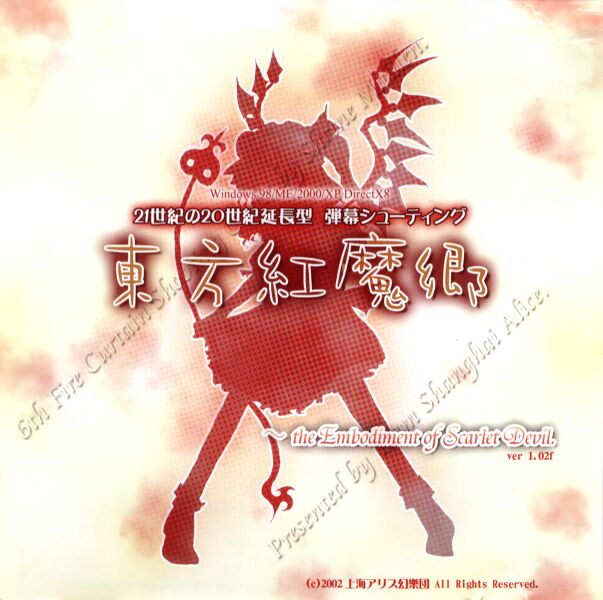 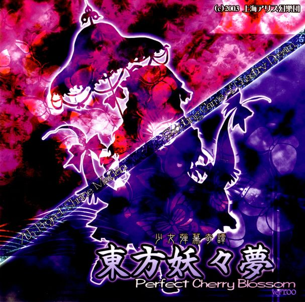
- Touhou 08 - Imperishable Night
- Touhou 09 - Phantasmagoria of Flower View 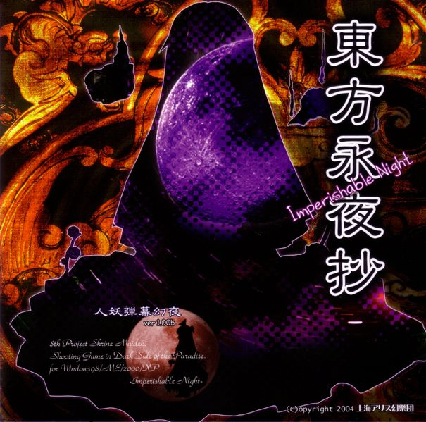 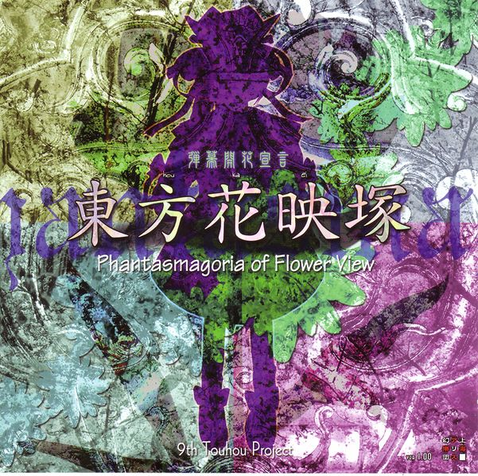
- Touhou 10 - Mountain of Faith
- Touhou 11 - Subterranean Animism 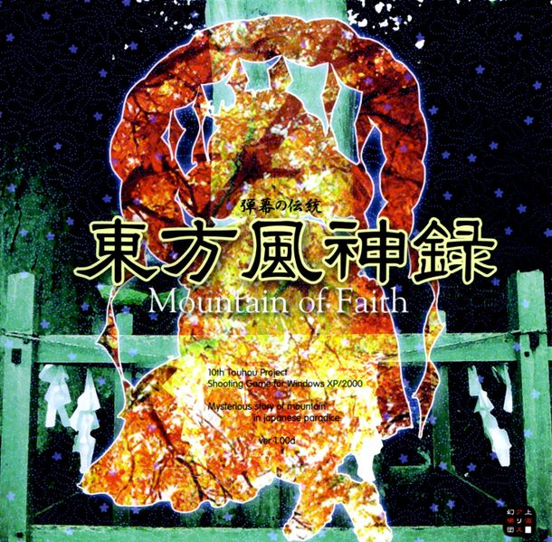 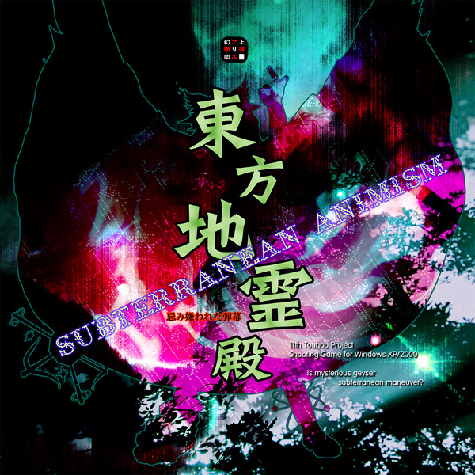
- Touhou 12 - Undefined Fantastic Object
- Touhou 13 - Ten desires
- Touhou 14 - Double Dealing Character
- Touhou 15 - Legend of Lunatic Kingdom 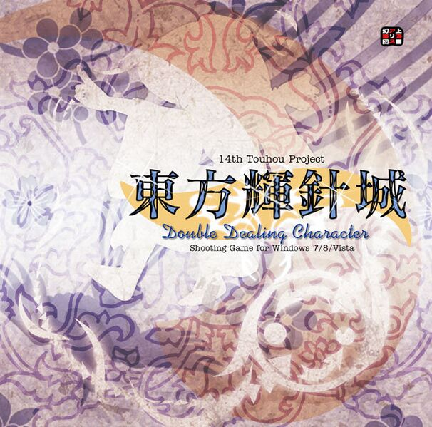
- Touhou 16 - Hidden Star in Four Seasons
- Touhou 17 - Wily Best and Weakest Creature 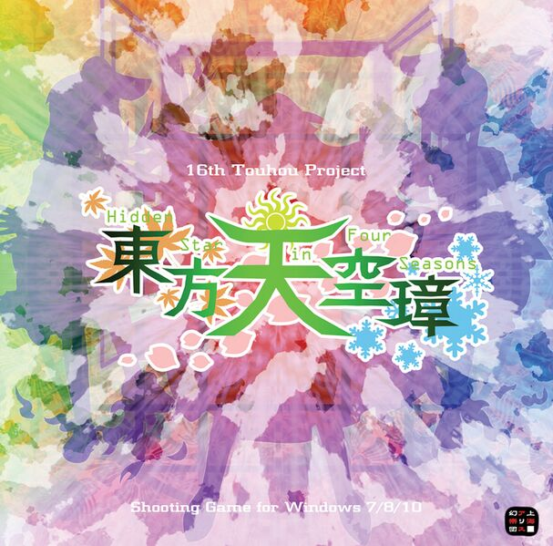 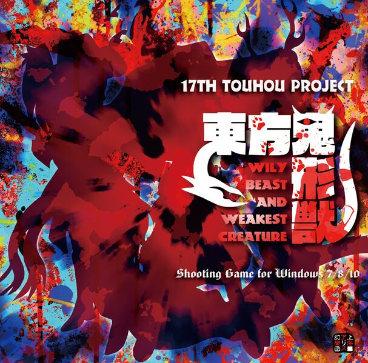
DOWNLOAD DOWNLOAD
DOWNLOAD DOWNLOAD
DOWNLOAD DOWNLOAD
 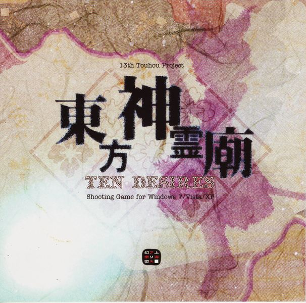
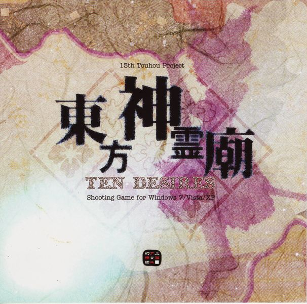DOWNLOAD DOWNLOAD

DOWNLOAD DOWNLOAD
DOWNLOAD DOWNLOAD
All rights belong to Team Shanghai Alice ©